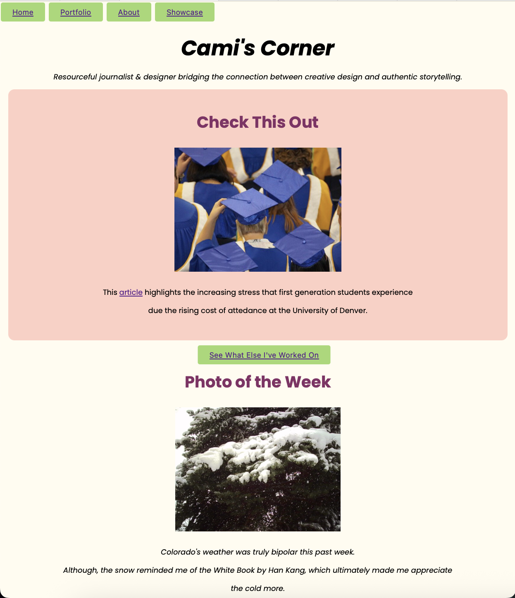
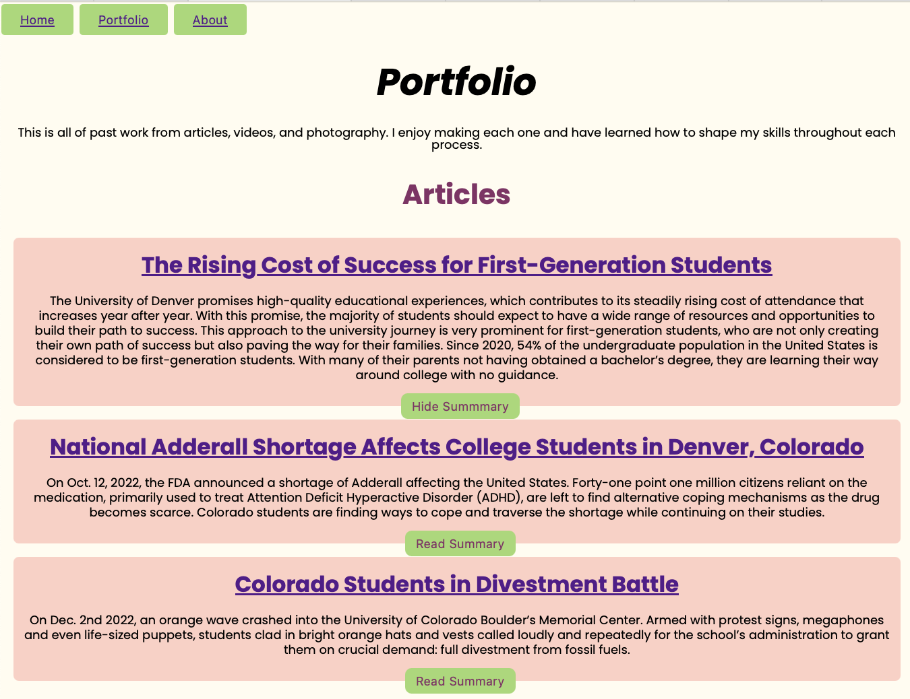
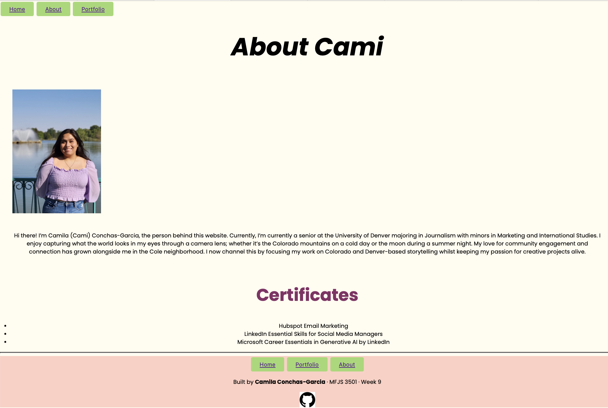

Showcase Page
Find out how I created this website!
Hi there! For MFJS 3501, I decided to build out my very own portfolio website with HTML, CSS, and Javascript. Cami's Corner is meant to highlight different pieces of who I am.
My goal is to increase visibility on my work and build stronger networks by presenting what inspires me on the creative side through media digest and my skills in action.
Tools Used
Github
Figma
Canva
Clamp Function Calculator
Main Pages
Homepage

The homepage is meant to set the personable tone of the website to show my ‘authentic’ self with what I am currently working on, what my week looks like, and the media I am consuming. The goal was to present a surface level idea of who ‘Cami’ is before navigating to the other pages of the website.
Interactive:Read Summary Button

I decided to create a read summary button to give the user an option to read a short description of what each article is about before clicking the link. I created a Javascript file to recognize the button in the specific portfolio section to show or hide the text every time the user toggles (clicks) the button.
Interior Page: About Me

The about me page is the page I am planning to continue building out after the quarter. This is where users, such as recruiters and people in the same career field I am in, can learn more about me: resume, certificates, contact me page. For now, what was the most important was to have a photo of me, since it is a portfolio site, and a small introduction blurb.
Reflection
At the beginning of the quarter, I was excited of building out a website without having to rely on a free account. I had so many ideas of what I wanted my website to look like to reflect my portfolio and myself. I’ve learned how important it is to build out design and being in the user’s mind to decide what are the important elements to add. By also thinking as a user, I’ve also learned how important accessibility elements are: Button Size, Color Contrast, Alt Text, etc. Throughout the last nine weeks, I’ve become more comfortable editing each out and section to build consistency while also understanding what I am capable of building in comparison into what I am not. This website is something I will continue building out to become more comfortable using HTML, CSS, and Javascript.